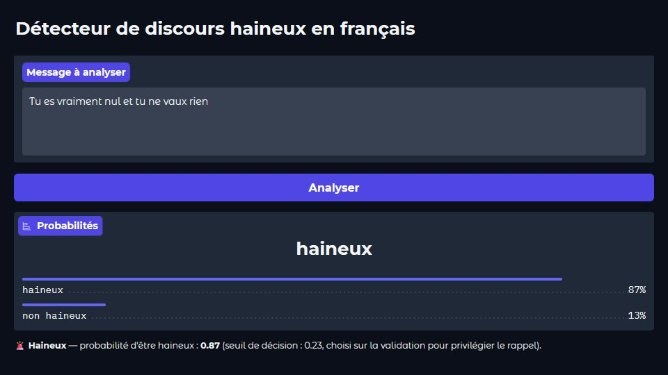

Hate speech detection in French
A CamemBERT classifier that flags hateful messages online, and above all an honest evaluation: corpus audit, separate validation set, decision threshold chosen on dedicated data.
- Period
- 2026
- Type
- Personal project
- Model
- CamemBERT (camembert-base)
- Data
- FrenchHateSpeech
Superset

The problem
Detect hateful messages automatically to support moderation. Two classic traps: an imbalanced corpus, where a naive model learns to always answer “not hateful”, and an overly optimistic evaluation.
What a data audit revealed
The dataset has 42,660 rows but only 7,499 distinct texts: over 80% of the rows are duplicates. In a first version, the same sentences ended up in both the training and the test sets, and the results could not be trusted (precision of 0.20 on the “hateful” class). So I started again from scratch.
The method (v2)
- Three separate sets: 5,249 training, 1,125 validation and 1,125 test examples. The test set is used only once, at the very end.
- Weighted loss by inverse class frequency, and best model selected on the “hateful” F1 on validation.
- Tuned decision threshold: 0.23 rather than 0.5. In moderation, missing a hateful message costs more than a false alarm.
Test results
On 1,125 unseen messages: 489 hateful messages detected, 66 missed, 129 false alarms.
Limitations
- Implicit threats still slip through: “Je vais te retrouver et tu vas le regretter” (“I'll find you and you'll regret it”) is classified as not hateful. The model relies mostly on explicit vocabulary.
- Some labels in the corpus are debatable, and the corpus is small once deduplicated.
- It is a moderation aid, not a judge: human review remains essential.
Python · Transformers · CamemBERT · PyTorch · scikit-learn · Google Colab (T4 GPU)